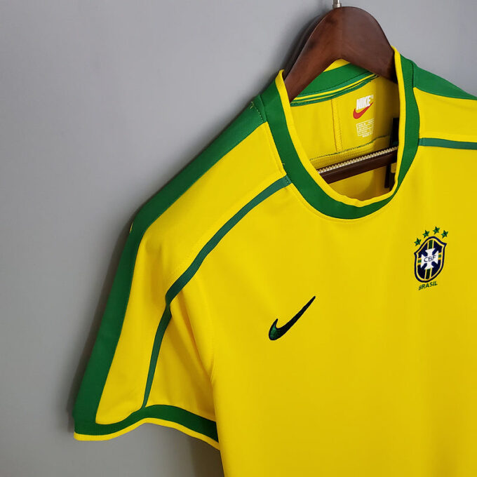

Ask a room of football shirt collectors which World Cup kit they would keep if they could only keep one, and the 2002 Brazil home shirt comes up with unusual regularity. It is not the oldest classic in the rack, and it is not the rarest. It is simply the one that still looks like a World Cup shirt when you hang it on a door and take a step back.
This is a short reading of that kit — the Nike template Brazil wore in Korea and Japan, the one associated with Ronaldo’s eight-goal tournament — and a practical note on how it sits in a retro collection today. It is not a match report, and it is not a valuation. It is about the shirt itself.
What you are actually looking at
The 2002 home shirt is canary yellow with a dark green collar flash and green panels that cut in from the shoulders and down the sides. The CBF crest sits on the left chest with five stars above the badge. The Nike swoosh is on the right. There is no front sponsor. That last point matters more than it first appears: with nothing printed across the middle, the yellow field stays open, and the crest and swoosh do the talking.
On the Vintage Football Shop version of this shirt, those marks are the first things to check. The crest, the stars, the green side panels and the collar shape are the details that tell you you are looking at a 2002-era home kit rather than a later or earlier Brazil yellow.
A few marks worth knowing
- The CBF badge with five stars, for the World Cups won up to 2002 itself.
- The Nike swoosh on the right chest, in green on yellow.
- Green shoulder and side panels, with a mesh-like texture on some panels.
- A relatively tight collar, not the lace-up or deep V of earlier Brazil shirts.
The shirt still works because the yellow is left alone. No sponsor, a clean crest, and green used as a cut rather than a wash.
That is the pull-quote version of the same observation. Later Brazil home shirts often carry a front partner logo. Plenty of them are still handsome. The 2002 shirt is the one that photographs like a national jersey first and a commercial object second.
How it sits next to other Brazil kits
If you already know the 1998 Brazil home shirt — the one with the more traditional collar and the Nike placement of that earlier final — the 2002 kit feels like a step into a new template rather than a refresh of the same idea. The 1998 shirt is still in the collection; it is a different silhouette and a different way of using green. Together they make a clear before-and-after of the late 1990s and early 2000s.

Collectors who like a World Cup thread often put the two Brazil homes next to a France 1998 or an England 1998. Those shirts are in the shop as well. The point is not to complete a set for its own sake. It is that 1998 and 2002 are close enough in time that the design jump is easy to see when the shirts are on the same rail.
World Cup homes, 1998 to 2002
A compact reference for the national homes mentioned in this piece. Years refer to the tournament the shirt is associated with, not to a price or a stock count.
| Tournament | Team | Maker | What stands out |
|---|---|---|---|
| 1998 | France | adidas | Royal blue home, coq badge, no front sponsor |
| 1998 | Brazil | Nike | Yellow home, earlier collar, green trim |
| 1998 | England | Umbro | White home of the France 98 campaign |
| 2002 | Brazil | Nike | Yellow with green side cuts, five-star crest |
Sizing and printing, in brief
Retro shirts in this collection do not always follow the same cut as a current club replica. If you are buying the 2002 Brazil home kit — or any of the related national shirts — start with the shop’s sizing page and measure a shirt you already wear, rather than guessing from a modern Nike size. If you want a name and number on the back, the shop currently offers customisation on many shirts; check the product page for the options available on this kit.
Care is straightforward and slightly boring, which is what you want: follow the label, avoid high heat, and do not assume a retro shirt wants the same wash as a polyester training top you bought last season.
Where to look next
The 2002 Brazil home retro kit is on the shop, alongside the 1998 Brazil home and other national shirts from the same era. If you would rather read around the subject first, the pieces on the France 1998 shirt and on how to read crests and patches sit next to this one in the blog.